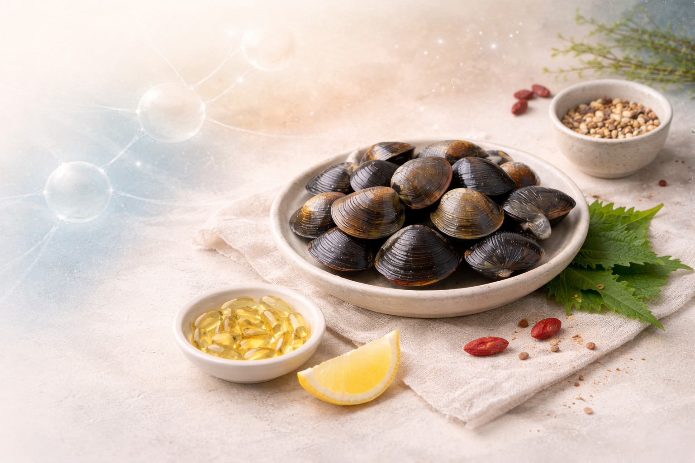

Corbicula japonica Prime
Натуральный морской продукт Дальнего Востока.
Ценится в Японии за вкус и пользу для здоровья.
О продукте
Корбикула японская — двустворчатый моллюск, обитающий в солоноватых водах Японии и Дальнего Востока. В Японии корбикула известна под названием «Ямато сидзими» и традиционно используется в кулинарии и народной медицине.
Польза и свойства
- Оздоровляет печень
- Стимулирует выведение токсинов
- Укрепляет иммунитет
- Нормализует обмен веществ
- Богата витаминами B, A, E и минералами

Рецепты

Спагетти с корбикулой

Жареная корбикула

Суп «Сидзими»